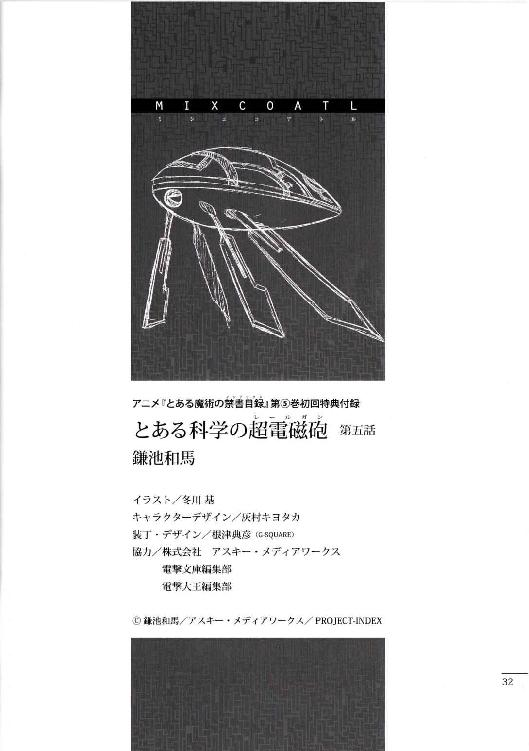
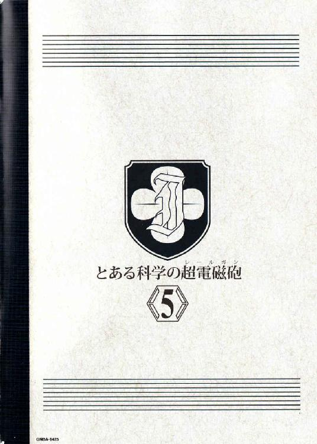

| [鎌池和馬] とある科学の超電磁砲5 | |
| 鎌池和馬 | |
| (2015) | |
|
アニメ『とある魔術の禁書目録』
第⑤巻初回特典付録
|
とある科学の超電磁砲
第五話
早朝の七時。
せっかくの休み（一応課外授業の一環だが、学生にとってはオール自由時間の半ゴールデンウィーク状態だ）なのだからゆっくり寝てれば良いじゃんと思う人もいるだろうが、バカンスだからこそ早く目が覚めてしまう、という現象もあるのだ。有り体に言えば、一刻も早く、少しでも長く、遊びに行きたい訳である。
御坂美琴と白井黒子がいるのは、ホテル三階の休憩所だ。
三階部分は、まだホテル入口のロビーから吹き抜けで繋がっている。その吹き抜けを囲むように展開される通路の四隅には、ちょっとしたソファとテーブル、マガジンラックを備えた休憩所がある訳だ。
美琴はシャチのような競泳水着をまとったままソファに腰掛け、ラックに収めてあった学芸都市のパンフレットをめくりつつ、
「......なんつーか、流石に三日も経つと豆腐とか焼き魚とか恋しくなってくるもんなのねー。今日の朝ご飯はどこにするか。和食のレストランとかってないのかしら......」
ブツブツ言いながら彼女が眺めているのは、ホテル内及び周辺にあるレストランの紹介ページだ。
一方、美琴と同じソファで、彼女のすぐ近くにゴロンと寝転がっている白井黒子（愛しのお姉様に膝枕をおねだりしてぶっ飛ばされた）は、
「......なんというか、流石に三日もエロ水着を着ていると新鮮味が薄れてきますわね。これは、そう、二日目のカレーはより一層美味しいとか言っていたものが、三日目四日目と続いてゲロ吐きそうな顔になるようなものですの」
新たな刺激を求めるツインテールは、とりあえず暇潰しに寝転がったままパンフレットに目を通す。
そこで不意に、白井黒子の両目がビッガァァ!!と閃光を放った。
「こっ、これだァァァ!!」
「ンッ!?」
ビクッと肩を震わせる美琴。
白井はガバッとソファから身を起こすと、美琴の顔のすぐ前に広げたパンフレットを突きつける。
「これこれこれですのわたくしが追い求めていたものはまさにこれですのってばお姉様!!」
「ちょ、な、ばっ、ヌーディストビーチ!? 何でそんなもんが学芸都市の端っこの方に存在してんのよ!!」
美琴は顔を仰け反らせ、少しでも卑猥な記事から遠ざかろうとする。
ヌーディストビーチというのはあれだ。水着を着ないで泳ぎ回るための海水浴場、有り体に言えば裸の王国である。
白井は何故か瞳をキラキラ輝かせ、両手を顔の前でガッチリ組んで乙女モード。
ピンクとホワイトで構成される心の花を咲き誇らせ、鬱陶しくなった白井はこう言った。
「別段、水着が悪いという訳ではありませんの。ただ、時には別ベクトルからの刺激を欲するのが人間というもの!!そこへ行くと水着を派手にしたり地味にしたりといった小手先の方向転換ではなく、いっそ全部素っ裸になるというこの大胆な発想こそが明日の未来を切り拓くんですのよお姉様!!」
「私に同意を求めんな!! ハッ、そ、そうだ！いや、つーか、ヌーディストビーチ区画って、年齢制限とかあるもんじゃないの？」
「ヌードを欲するヌーディスト達にエロの心はないんですのよ!!彼らはもっと真剣な心で、真面目に衣服を脱ぎ捨てているんですわ......」
「彼らの主張自体は尊重してやるが、アンタが言うと胡散臭く聞こえるからやめろ変態」
そんな事を言った美琴だが、そこでふとこんな事を考えた。
白井黒子は現在、エロ水着に飽きている。だったら普通の服でも着てろよと言いたいのだが、どうやら彼女の嗜好はどこまで行っても肌色方向らしい。
そこにきてのヌーディストビーチなのだが、逆に言えば、これを勝手に放っておけば白井はやがてヌーディストビーチにも飽きるはず。しかも、素っ裸以上の肌色は存在しないのだから、ここから先はどれだけ白井が肌色を求めた所で、ベクトル的に『布が増える方向』の変化しか望めない。
つまり、
（ここがＵターンの基点!! 今この馬鹿の御乱心に耐えれば、後は北風と太陽の巻き戻しみたいに、勝手に服を着込んでいくはず!!）
それは単に、この学芸都市のビーチだけの問題ではない。
白井黒子の今後を左右する、彼女を真人間にするビッグチャンスかもしれない。
その結論に至り、御坂美琴はニヤリ......と笑顔を作る。
彼女は超わざとらしくパチパチと小さく拍手し、白井黒子を賞賛する。
「い、いやぁ、そんなに言うんならもう仕方がないんじゃない？た、旅の恥はかき捨て。そこまでアンタが信念と決意をもってヌーディストビーチに行きたいって言うなら、私はアンタの行動を止められないなあ」
「......な、なんですの？ お姉様から攻撃的なリアクションがないなんておかしいですわ。さっきから笑顔がずーっと固定されっ放しですし、何か企んでいるように見えますわ」
「なっ、なん、何の事かしら？ ただアンタが珍しく素晴らしい事を言うから、私は単に目から鱗が落ちているだけなんだけどなぁ......」
「ハッ？ まさかヌーディストビーチで防御力が低下しているわたくしを、お姉様が背後から押し倒すという寸法では!?わっ、わたくし、必要以上にサンオイルを用意してお待ちしておりますわ!!」
「ふざけんじゃないわよこの変態」
思わず素で反応してしまったその時、エレベーターホールの方から初春飾利がやってきた。ちょっと焦っているのか、小走りの状態だ。
美琴は露出狂から視線を外し、初春の方を見て、
「おっすー。今日の朝ご飯どこにする？ 私は和食で攻めたい気分なんだけど」
「お、おはようございます。えっ、ええとですね。そのう、佐天さんはどこに行ったかご存じありませんか？」
「？」
美琴と白井が首を傾げると、初春はこんな事を言う。
「また寝坊しているかと思って、佐天さんの部屋に内線で電話をかけたんですけど返事がなくって。部屋にいないなら、もうこっちに来ているかと思っていましたけど」
「見てないわね」
「......単に一人でどっかに行っているだけではありませんの？」
「一人でご飯を食べに行くなら、私達に連絡ぐらい入れてくれるものじゃないですか。何だか昨日から様子がおかしかったみたいですし、もしかしたらずっと前から体調を崩していて、部屋の中で倒れているとか、そんな事は......」
初春が妙に不安に駆られているのは、やはり前日からの友人の変化を気に留めていたからだろう。
今も本当なら佐天の部屋を訪ねたいと思っているかもしれないが、まさか根拠のない事でホテルから合い鍵を借りる訳にもいかない。
と、そこで初春は恐る恐るといった感じで白井黒子の顔を見た。
白井は空間移動を扱う大能力者だ。
彼女の能力があれば、ドアが施錠されているかどうかは関係ない。
美琴の能力でも電子ロックを解除する事もできるが、『強引にこじ開ける』美琴と『ドアをすり抜ける』白井では、どちらが穏便かは明らかだ。
初春の視線を受けて、白井はぷいと横を向いた。
「面倒臭そうですわ」
「黒子」
美琴が短く言うと、白井は『分かっていますわよ』と答えて、
「......お姉様がわたくしと一緒にヌーディストビーチヘ出かけてくれるというのなら」
「ゲンコツでセルフ楽園へ連れて行ってあげるわね☆」
ちょっと涙目で頭のてっぺんをさすっていた白井黒子は、佐天の部屋の前まで辿り着くと、念のためにドアを数回ノックした。どうやら、流石の彼女でも他人のプライバシーを無駄に覗きたいとは思わないらしい。
しかし反応はない。
白井がため息をついた直後、彼女の体が音もなく唐突に消えた。空間移動を使ってドアの向こうへ転移したのだ。
二、三分ほど経過すると、佐天の部屋のドアが内側から開く。ロックを外した白井は、美琴と初春に向かって首を横に振り、
「部屋にはいませんわね。どこかへ出かけたようですわよ」
「......？ やっぱ、一人で朝ご飯を食べに行っちゃったとかでしょうか？」
「それがですわね」
白井は言うべきかどうか、少し迷った末、
「エアコンを切って長時間経っているせいか、部屋の中は蒸し暑くなっていますわ。それに、シャワールームを使った様子もありませんの。寝起きの女の子が、顔も洗わずにそのまま表に出るとは思えませんけど」
「それって......？」
初春は首を傾げた。どういう状況なのか、全く予想ができていないからだろう。
逆に、美琴の方が一歩前へ出て、詰め寄るように白井に尋ねた。
「家具や内装の様子は？ 暴れたような跡はあった？」
「お姉様？」
「良いから答えて」
美琴が思い浮かべているのは、二日前の夜に出会った『係員』の事だ。確かあの時、美琴と一緒に佐天も『見てはいけないもの』と遭遇してしまっている。
だが、白井は首を横に振った。
「風紀委員としての経験から言いますけど、おそらくそれはノーですわ。そもそも、いくら壁で仕切られているとはいえ、そんな騒ぎになっていれば隣の宿泊客が気づきますわよ」
「痕跡は全部覆い隠されている......とまで疑い始めるのはやりすぎか。だったらエアコンやシャワールームの方も、もっと自然に整えられているはずだろうし」
「？？？」
そんな美琴の呟きにリアタションを取れない白井と初春。
美琴は白井の方を見て、
「確か、広域社会見学って二〇人ぐらいの学生が参加してんのよね。読心系の能力者を捜して、何とか連れて来なさい。『風紀委員』の名前でも何でも出して、とにかく大至急」
「え、ちょ、ま、待ってくださいよ御坂さん」
初春が、ようやくそんな声を出した。
「それって、どういう事なんですか？ その、『風紀委員』の名前を出して動くような事態なんですか？」
不安そうな声だった。無理もないだろう。『風紀委員』とは、日本の学園都市の中では治安を司る者───つまり警察と似たようなものなのだから。居場所の分からない友人を探すために、そんなものが出てきてしまったら、誰だって不安になるに決まっている。
「念のため、よ」
だから、美辱の方も言葉を濁して言うしかなかった。
確証はないし、この場合、確証なんてない方が良いのだから。
美琴と初春が佐天の部屋の中で待っていると、一〇分ぐらい経って、白井が空間移動を使って戻ってきた。彼女は見知らぬ女子生徒の手を握っている。おそらく美琴達よりも年上だろう。高校生ぐらいの少女は、所々をリング状のパーツで留めるタイプのビキニをまとっている。
「馬鹿デカい施設の中で知り合いが迷子になったとかって話だったけど」
読心能力の少女はそんな事を言った。
白井はそういう風に説明したのだろう。事実、間違いではない。
「先に断っておくけど、余計な個人情報を読んじゃったとしても、それは私の責任じゃない。あなた達の方から頭を下げたっていうのを忘れないでよね」
「......色々苦労してんだ？」
「それなりにね」
少女は鼻で笑うと、どこからともなく複数のヘアピンを取り出した。何らかの法則性でもあるのか、彼女は水着の布の各所にヘアピンを挟んでいく。
「ふうん。そういう精神集中法なんだ」
「......いつもは下着に挟むんだけど、こういう時、水着はありがたいわね。必要な情報だけを読み取るように、狙いを定めるの。同じ客室という空間であっても、ホテルマンの情報を読んじゃ意味がないでしょ」
言いながら、彼女はゆっくりと部屋を見回す。
その内に、ピタリと彼女の動きが止まった。地雷の大雑把な位置でも掴んだように、彼女はベッドの方ヘゆっくりと近づいていく。
「何よ、これ......」
やがて、少女はポツリと呟いた。
彼女は美琴の方を見て、
「あなた達、ここで一体何をやっているの？ 社会見学にしては度が過ぎているわ」
「どういう意味よ」
美琴が質問を質問で返すと、少女は指先でベッドを指差し、
「......この部屋の子、学芸都市に潜む秘密を突き止めてやるって考えて、ここから飛び出して行ったみたいよ」
佐天涙子はガタガタと震えていた。
両手は後ろに回され、手錠をかけられていた。格納庫の片隅に座らされた佐天の近くでは、壁に背を預けるように、大人の女性が立っている。
学芸都市の『係員』だ。
昨日も出会った、オリーブ＝ホリデイとかいう女だ。
ただし、この前見た時とは格好が違っていた。すっぽりと頭まで覆う黄色の防護服のようなものを着込んでいるのだ。耐火服も兼ねているのか、消防隊の装備のようにテカテカした素材のものだ。声はくぐもったものではなく、しっとりとした音域だった。おそらく
一度防護服内部のマイクで拾った音声を、スーツ外部のスピーカーから発しているのだろう。
オリーブの足元にはプラスチック製のバッグのようなものが置いてあった。釣り具を収めるケースのようなものだ。手錠はそこから出てきた。おそらく他にも、人間の体を拘束したり、痛めつけたりする道具がたくさん入っているはずだ。
オリーブは小さな無線機に向かってささやく。
「夜が明けてしまいましたね」
『はい』
「『経営陣』はまだ協議を続けていると。この子を逃がすにしても警告するにしても『他の手段』を選ぶにしても、もっと早く結論が出るものだと思っていたのですが」
『彼らはいつでもあんな調子でしょう。とはいえ、流石に今回は状況が状況ですから、慎重な判断を要する場面であるのは理解できますが』
佐天の肩がビクッと震える。
中一教科書レベルの英語しか分からない佐天には、詳細な内容を知る事はできない。しかしそんな彼女にも、危機感ぐらいは伝わってくる。そう、前回、美琴と一緒にここへやってきた時は、もっと早く解放されていたのだ。こんなに長く拘束される事もなかったのだ。
何かが違う。
前回行った事のある目的地と同じレールを走っていたはずの列車が、いきなり切り替えレバーを動かされて、全く知らない場所へ向かってしまっているような気がする。
『それよりリーダー。防護スーツを装着しているとはいえ、長時間そこに滞在するのは好ましくありません。やはりそいつは一度、我々に引き渡して、リーダーは職場に戻っていただいた方が───』
「ふん、汚染ですか。実際には何も分かっていないのでしょう。分からないままだから、数値の上では何の異常もなくとも、必要以上に怯えてそんな風に着ぶくれしている。本当にそんな事が起きているかどうか、あるいはこんな防護スーツ如きで安全を確保できるのかどうか」
『......、』
「良く分からないものを、良く分からないまま研究しようとした報いかもしれませんね。とはいえ、それもまた、世界の警察としての責務ではあるのですが」
オリーブの口調はつまらなさそうだ。
ふと彼女は、木来の職務とは関係のない話を始めた。
「あなたは、以前はどこで働いていましたか」
『......、ロシアのパイプライン破壊作戦に。我々の益にならない石油の取り引きは、存在するだけ無駄という事でしたので』
部下の声は沈む。
世界中が原油高に苦しみ、企業が漬れたり飢餓地域が広まったりする中で、巨大なパイプの裂け目から湯水のように飛び出す黒い噴水を眺めるのは、決して有意義な経験とは思えなかったからだろう。
「私は南極基地の『ライン引き』に参加していました。新たな地図の作成作業です。温暖化の影響で氷が溶けると、各国の観測基地が氷の裂け目に呑み込まれたり、地盤が緩んで倒壊したりするんですよね」
オリーブの口調が乾いていく。
「拠点を失い、南極を歩き続け、救援を求めて手を挙げる他国の研究者達を、端の方から順番に狙撃していきましたよ。まぁ、彼らを基地の中に保護するという事は、我々のテクノロジーを他国に持って帰らせてしまうようなものですからね」
『......、』
「結局、どこへ行っても変わらないものですね。てっきり、死体なんて特別な所にしか転がっていないものだと思っていたんですが」
『我々は世界の警察としての職務を全うしたまでです』
「でしょうね。人を殺して反対意見を黙らせるだけで実現できると言うのですから、平和も案外安いものです」
自嘲気味に係員が微笑んだ時、無線機の向こうで動きがあった。
部下が何やら複数の紙切れをめくっている音が聞こえてくる。学芸都市の取り決めに従ってマニュアル的な作業を消化しているのだ。
やがて、部下はこう言った。
『「経営陣」の結論が出ました』
「やっぱり？」
『ええ』
そう、とオリーブは小さく呟いてから、一度だけ佐天涙子の方を見た。
壁際で震える少女は、英語で呟かれた言葉を耳にする。
「悪いわね」
まだ戸惑っている読心能力の女子高生に向かい、美琴は詰め寄る。
「佐天さんはどこに行ったか分かる？ 足取りは!?その能力を使って、佐天さんが歩いたルートとかは辿れないの!?」
「できないわよ」
少女は首を横に振ってそう答えた。
「私の能力はそういう使い方に向いていないし、無理にやったとしたって、おそらくホテルの一階ロビー辺りまでが限界。あそこ、一日にどれだけの人間が出入りしてると思っているの？複数の残留情報が混ざりすぎて、どうせ全部ノイズになってしまっているわよ」
役立たずが、という言葉をすんでの所で呑み込んで、美琴は白井に指で合図。まだ何か言いたそうな読心能力の少女には、穏便に退場してもらう事にする。
部屋の中に残されたのは美琴と初春の二人。
そう都合良く、佐天の行き先を示すものが部屋の中にあるとは思えない。かと言って、これだけ広い学芸都市の中を、ただ闇雲に走って佐天を見つけられるとも考えにくい。
「そ、その、御坂さん......」
初春が言葉を出そうとして、声を詰まらせていた。質問したい事はあるが、最悪の答えは聞きたくない。そういう心理が見て取れた。
だからこそ、美琴は端的に先手を打つ。
「詳しい事は言えないけど、佐天さんはこの学芸都市の機密情報に触れちゃった可能性が出てきたわ。おそらくこの部屋を出たのは自発的でしょうけど、そこから先の足取りは不明。もしかしたら、この街の『係員』って連中が関わっているかもしれない」
「そんな......」
「でも、連中はそう簡単に私達には危害を加えてこない。いや、そういう変なルールが作られているみたいだった。だから、そのルールが適用されている内は、今すぐ佐天さんが危険な状況に陥るって訳でもないわ」
言いながら、美琴は状況を整理する。
この広域社会見学には、警備員所属の教師も引率している。彼らの力を借りるかどうか迷ったが、首を横に振った。大人の力は集団の力。だがここは日本の学園都市ではない。警備員の力など何の役にも立たない。その上で、大人は規則や原則を持ち出して、美琴達の行動を頭ごなしに封じてしまう。一分一秒が惜しいこの状況では、彼らの存在は足手まといになるだけだ。
しかし、どうやって佐天涙子の足取りを追う？
以前対峙した『係員』オリーブ＝ホリデイの対応を考えれば、仮に彼女達に捕らえられたとしても、すぐさま命の危機に見舞われる事はないかもしれない。しかし断言はできないし、そもそも美琴が出会ったオリーブ以外の『係員』に捕まり、全く異なる対応をされてしまうリスクは否定できない。
さてどうしたものかと少し考えた彼女は、
（そうだ......）
美琴は部屋の中をざっと見回すと、部屋の隅へ向かった。そこには財布代わりのＩＣカードに料金をチャージするための、ＡＴＭのような機材が置いてある。
以前、美琴はこの機材を使って学芸都市のネットワークに侵入した事がある。佐天の失踪に係員達が関わっているなら、彼らはネットワーク上で何らかの連絡をしている可能性がある。
美琴はチャージ機械を使って、前回と同じ方法で侵入を試みる。
相変わらず（日本の学園都市で暮らす彼女にとっては）時代遅れのセキュリティを素通りし、いくつかの情報をチェックする。その内に、防犯システムのアラート情報の中から、佐天涙子らしき人影の写った報告ファイルを発見する。
「見つけた!!」
ただし、佐天が撮影された場所については、つまらない暗号が施されていた。
「くそ、面倒ね......。解析するのに手間がかかる種類の暗号か」
理論自体は単純で、時間をかければ解読できるが、今はそれだけの余裕がない。ここを深く調べるか、別の角度から調べ直すか、判断に迷う美琴だったが、
「......どいてください」
ふと、後ろからそんな言葉をかけられた。
美琴が振り返るより早く、初春飾利は美琴を押しのけるように前へ出た。一体どこへ隠してあったのか、ボールペンより少し長い程度の棒がある。いや、違う。初春がボタンを押すと、まるで巻物のように透明なシートが飛び出した。高柔軟性プリント基盤で作られた、防水加工の超薄型コンピュータだ。
ビュン！ という音が響くと、透明なシートに映像としてキーボードが浮かび上がる。特にケーブルで接続している訳ではないのに、旧式（に見えてしまう）チャージ機械と超薄型コンピュータが即座に連動する。
キーの上を一〇本の指が走る。
暗号は七秒で解読された。
さらに複数のウィンドウが連続表示され、ネットワークの各所が多角的に解析されていく。それはもう、侵入などという生易しいものではなかった。このシステムの管理者や設計者以上の速度でもって、見えない王として君臨する。単に学園都市のマシンスペックに任せて手当たり次第に調べるのでもない。瞬時にネットワークの構造を分析し、最速かつ安全な近道、裏道を通って誰よりも早く最短の作業量で目的の情報に到達する。
力技によるランダムアタセスの速度を、人の知性が追い抜く瞬間を、美琴は見た。天才的な職人の勘や指先が、大企業の精密機械よりも優れた数値を叩き出す、というのをたまにテレビで放送しているが、それを目の当たりにしたような気分だった。
「見つけました」
当の初春飾利は美琴の驚きなど意にも介さず、こう言った。
「ネットワークから意図的に切り離されたコンピュータがあるため、正確な事は言えませんが、おそらく現状得られる情報を総合的に判断するに、佐天さんがいる場所はここしかありません」
一度格納庫から外へ出ると、自動車か列車のようなものに乗せられて長い道路かトンネルのような所をしばらく進んだ上、そこから下ろされて、今度は長い通路を随分と歩かされた気がする。
佐天涙子の説明が曖昧なのは、乗り物に乗っている時は寝袋のような物に詰め込まれ、こうして歩いている現在も、目隠しをされたまま歩かされているせいだ。人間の感覚は視覚に頼る所が多いのか、それだけで距離やバランスといった判断までもが歪められている気がした。しかも両手は後ろに回され、手錠をかけられているため、余計に歩きにくい。人間は歩行する時に両手を振ってバランスを取っている、という単純な事実を、嫌というほど思い知らされる。
逃げたい。
今すぐ大声を上げて、全力で走ってしまいたい。
しかし、佐天の背中に何か硬いものが押し付けられている感触が、そういった行動を食い止める。刃物のような尖ったものとは違う、しかし棒状の、金属ともプラスチックとも判断のできない、おかしな感触。正体が分からないために、余計に想像を掻き立てられ、佐天は大胆な行動に移れないまま、ただ係員の誘導に従って歩き続けるしかなかった。
変化が訪れたのは、いつだったか。
最初に感じたのは嗅覚。潮の匂いが感じられたのだ。次に波の音。サンダル越しに伝わる地面の感覚が平らな床面から岩を踏むようなものへ切り替わり、最後に目隠し越しにも分かるほどの強い光があった。
施設の中から、どこか外へ出た。
そう思った時、唐突に佐天の耳の辺りに係員の指先の感触が伝わった。ビクッと震える佐天を無視して、係員は目隠しを外していく。演劇用のスポットライトを顔に向けられたように、強烈な光が目を焼いた。
早朝という時間帯のせいか、光は上というより正面から追ってくるように感じられた。
「......っく......」
太陽を遮るように片手を挙げ、チカチカと瞬く視界を耐えると、しばらくして視覚が元に戻った。そこはやはり施設の外だった。
ただし、
「岩場......？」
学芸都市の至る所にある、きめ細かい白い砂浜ではない。これもおそらく人工物だろうが、ここにあるのは黒々とした岩場だった。海水と若干の砂の混じった硬い感触は、不安と不快感しか誘発させない。
岩場は単に足元だけではなく、陸地側に壁のようにそびえ、さらにひさしのように、天井側にまで広がっていた。佐天が立っているのは、カタカナのコの字の中にいるようなものなのだ。
自分が来た所を振り返ると、岩場の中に銀色のパイプやコンクリートの構造物がいくつか埋もれている。テレビで見るような、魚の養殖場を彷彿とさせる施設群だが、おそらくはダミー。単に施設の『出入り口』を隠すための飾りなのだろう。
「まったく、やはり『汚染』なんて『経営陣』の誤判断だったようですね。過敏になるのは理解できますが、業務に支障をきたさないでほしいものです」
声のした方へ佐天が振り返ると、そこにはオリーブがいた。いつの間にか、黄色の防護服は脱いでいる。今、彼女の体を包んでいるのは、スポーティーな競泳水着と救命胴衣という格好だ。
「結構、自然な感じに作られているでしょう？」
得意げな声で、オリーブは言う。
彼女が眺めているのは周囲の岩場だ。
「ここは元々、ＳＦ映画を撮影していた最初期の学芸都市にはなかったものなんです。必要に迫られて、我々の手で急遽こしらえたものなんですよ」
「......？」
「ここはですね」
オリーブはにっこりと微笑んで話を統けた。
まるで、初めて遊園地に来た子供にアトラクションの楽しみ方を教えるように。
「海難事故の多発地帯なんですよ。我々係員一同が心からお客様の身を心配して、立入禁止の看板を立てているのに、それでも恋に恋したカップル達が、人目を避けてやってきてしまうような、そんな場所。素直に遊泳水域で楽しんでいれば良かったのに、変な所へ足を運んでしまうから、不幸な事故が起こってしまう。そんな場所なんですよ」
佐天は。
佐天涙子は。
自分の顔の筋肉が、不目然に動くのを感じた。いや、顔だけではない。危機感は知っても具体的な策を思いつかないせいか......全身の筋肉が迷うように、ボコボコと泡在つような、あるいは地殻変動で陸地が盛り上がるような......そんな風に、自分でも身震いするような触感が体の表面に広がっていく。
「我々が、何故こんな物騒な場所を意図的に構築したかはご存じですよね？」
オリーブは救命胴衣の内側に手を差し込み、ビニール製の手袋を両手にはめながら、そんな事を言った。
「......ぁ......」
「それはですね。仮にここで誰かが溺れたとしても、遠い国の旅行者の水死体がぷかぷかと浮かんでいたとしても、誰も不自然に思わないようにするためですよ。国境をまたいだ遺体は色々と面倒ですからね。こういう創意工夫が必要なんです」
「うああ!?」
サラリと言われて、それが冗談でも何でもなく、ごくごく自然に繰り返されてきた事だと悟って、佐天涙子は思わず後ろへ下がった。しかし足がもつれ、そのまま仰向けに転がる。固く鋭い岩場が、背中や後ろに回された両手を傷つけた。だが佐天は、そんな痛みなど全く感じていなかった。それ以上の恐怖が、全身を残さず包み込んでいたからだ。
オリーブはゆっくりと笑みを広げながら、佐天に言った。
「いけませんよ。余計な出血をすると、海水が染みます」
「いやだ......」
佐天は無視して、まるで巨大なヤスリで背中を削るように岩場をズルズルと移動しながら、少しでもオリーブから遠ざかろうとする。
その努力を、オリーブはたった一歩で踏み潰した。
近づいた係員は、佐天の髪を掴んで強引に引き起こす。
「あぐっ!? や、やめて。やめてよ!!」
両手を動かそうとしても、手錠がガチャガチャと音を鳴らすだけ。オリーブを蹴飛ばそうとしたが、腰に力が入らない。佐天はボロボロの顔で、どうにか自分が生き残る術を考え続ける。
「あたしは日本の学園都市の学生なんだよ！ 能力者がここで行方不明になったら困るんでしょ！確か、軍事機密がアメリカ側に漏れた恐れがあるとか言って!!」
「ええ、それはもう一人の超能力者のケースですね。あなたに関しては『経営陣』の方でも多少意見が割れたようですが、結果として許容の範囲内という事で話がまとまったようです。まぁ、所詮は大した価値もない無能力者のようですし。あなたが消える事で生じる混乱の規模は、それほどではなかったという事ですね」
「ッ!?」
錆びた刃物で心を抉り出すような言葉だったが、佐天にショックを受けている暇はない。
「あたしの両手には、手錠をつけた痕がある！ガチャガチャ動かしたから傷もできてる!!今から手錠を外したって、詳しく調べれば分かっちゃうんだから!!」
「こうした岩場での海難事故の場合はですね、遺体は五体満足とは限らないんです」
オリーブの表情は変わらない。
にっこりとした笑顔が、絶壁に見える。
「遺体が発見されるまでの間に、何度も何度も波にさらわれ、ゴツゴツした岩に擦りつけられたり......後は、魚やカニなどに食べられる事もありますね。すると、右手と左手で指の本数が合わなかったり、顔が損壊して判別がつかなくなったり、そんな事が起きてしまうんです。傷の一つ二つ、ごまかしてしまうのは難しくありませんよ？」
言葉が出なかった。
単に髪を掴んで海の中に顔を突っ込まされるだけでは終わらない。ぐったりと動かなくなった自分がその後にどういう『加工』を施されるのか、それを知って佐天の視界が真っ暗になる。単に殺されるのとは違う、もっと別種の陰湿な悪寒が走り抜けた。
係員は佐天の髪を掴んだまま、ぐいっと自分の右に近づけ、まるでキスするような距離で言う。
「さて、と。そろそろよろしいでしょうか？」
「ッ!!」
ボロッと、佐天の涙腺から透明な液体がこぼれた。それが最後の一線だった。彼女は獣のように叫ぶと、目の前にいるオリーブの鼻の辺りに思い切り噛みつこうとする。冗談でも何でもなく、本当に顔の真ん中を噛み千切ってやろうと考えていたが、実際にはオリーブは簡単に頭を後ろへ振ると、もう片方の手で佐天の顎を打ち上げた。
バガッ!! という鈍い音が佐天の頭の中で炸裂し、口の中にドロッとした鉄の味が広がる。勢いを失い、だらりと下がる佐天の体を、オリーブは髪の毛だけを掴んで持ち上げ、岩場から海の方へとざぶざぶ歩いていく。
引きずられる佐天は、朦朧とした意識のまま、自分の髪を掴む係員を見る。
「......あの、中には......」
「？」
「あの中には、何があったの......!?」
佐天が言っているのは、格納庫の巨大な扉の向こうにあった新たな空間だ。赤っぽい光に包まれた二重扉と、立入禁止を促す大量の警告ラベル。結局、佐天涙子はその秘密の中心点までは触れていない。
あれですか、とオリーブはそっけない調子で言った。
ここまで来てしまえば隠す事でもないと判断したのか、あるいは命乞いをしなかった佐天に何らかの感心でもしたのか、さらに深い所へと進みながら、
「あそこは『行方不明』で処理された方々が入る場所です。一種の実験施設といった所でしょうか。あなたは死亡扱いですから、あそこには入れませんよ」
「......、」
「学芸都市はありとあらゆる事件、事故、その他イレギュラーな事態を『アトラクションショーの一環』として自然処理する機能が備わっていますが、どうしても消去できないものがあります。事件を起こした張本人です」
海水が、オリーブの太股の辺りまで上がってきた。
引きずられる佐天は、もう胸の辺りまで水に浸かっている。
「我々は警察機関に頼らずに事件を解決する訳ですが、それは別に犯罪者を擁護している訳ではありません。我々の手で解決した以上、我々なりの方法で裁かせていただいているんです」
一際大きな波が押し寄せ、佐天は頭から海水を被った。
塩のせいで鼻や喉に焼きつくような痛みが走るが、オリーブは気にも留めない。
ゲホゴホと咳き込みながら、佐天はさらに尋ねる。
「一体、何を......？」
「我々が研究しようと思っているものに関しては、いちいち回答する必要はないと思いますけどね。あなたはすでにその一部を、あの格納庫で見ているはずですが」
それは、死体袋のように並べられたトビウオ達の事だろうか。
木と布と黒曜石で作られた、最先端のテクノロジーとは反する方向に進んだ特殊な機体。それでいて、学芸都市のラヴィーゼ飛行隊と互角以上に渡り合う性能を秘めた、異形の機体。
「不思議なものでしょう？ 一応、水素燃焼型のエンジンを搭載しているようには見えますが、実際は不明。複数の墜落機を分解し、設計図の解析も済んでいるはずなのに、全く同じパーツを完璧に揃えて組み立てた所でちっとも起動しないんですよ」
オリーブは首を横に振った。
自分の業務とは違う部署の話だからか、その口調はどこか他人事だ。
「あれは本来、メカニズムとして成立していない機体なんです。いえ、成立していないというよりも、我々の知っているものとは全く違う法則で組み立てられているような......極めてイレギュラーな機構を搭載しているとしか思えないんですよ」
オリーブはそんな事を言った。
ような、という言葉を選んだのは、彼女自身その法則とやらを理解できていないためか。
佐天の足元が、危うくなってくる。足は届くのだが、岩場がぬめっているのか水流の影響か、サンダルでは足場を確保できない。
「しかしながら、あれらはあくまでも『装備品の一種』に過ぎません。我々が求めているのはですね、彼らの持つ力なんです。あの機体ではなく、あの機体を操る人間の持っている力。彼らもそこそこの組織力を秘めているらしく、なかなか人間そのものを捕獲させてくれないものでして。何とか撃墜した機体を回収するぐらいが関の山なんですけどね」
くすくすとオリーブは笑う。
「ただまぁ、戦闘が長引けば長引くほど、鹵獲機体の数も増えるのですから、上の『経営陣』は無邪気に喜んでいますがね。......戦地で命を削っている者の苦労というものも理解していただきたいものです。流石は研究対象だけあって、そこそこ手強い相手なんですよ、ヤツらは」
それは、ショチトル達の事か。
彼女達が学芸都市を狙っていた理由は、ここにあるのか。
何らかの力の『秘密』を探ろうとする学芸都市と、その『秘密』を死守しようとするショチトル達の攻防。結局の所、それがこの街で起こっている一連の争いの正体なのか。
だが。
具体的に、その力とは......？
「学芸都市は、新たな映画撮影技術を模索するため、世界各地から伝統的な技術を持った画家、彫刻家、陶芸家、浮世絵師、人形職人などを呼び集めています。すると、本来は美術や芸術とは関係のない、単なる『古くからの知識』までもが集まってしまう事があるのですが」
係員は言う。
力の正体を。
「そんな『古くからの知識』の端々に、登場するのですよ。一般的な物理法則とはかけ離れた、特殊な力や現象などが。最初は単なる誇張された伝承かとも思ったのですが、どうも調べてみると、個々の『報告』には何らかの法則らしきものが窺える。そこで、我々は本腰を入れて研究してみる事にしたのです。古くからある漢方が、現代の抗生物質を越える効能を示す事もありますから、ね」
学園都市の能力者ですら分からなかったもの。
佐天涙子には掴めなかった正体。
「そう」
オリーブは、海面に沈みつつある佐天に言う。
にっこりと、微笑みながら。
「我々は、学園都市とは異なるアプローチで超能力を開発しようとしているのですよ」
思わず目を見開く佐天。
そんな彼女に対して、オリーブ＝ホリデイはさらに告げる。
「そのために、あの機体を調べる必要があったんです。普通の法則では動きようのない、特殊な兵器をね」
御坂美琴と初春飾利の二人は佐天の部屋を出て、ホテルの建物からも飛び出し、学芸都市を走る鉄道の駅を目指して走っていた。白井黒子の空間移動を使うのが手っ取り早い移動方法だが、読心能力の少女を退場させるのに手間取っているせいか、連絡が取れなくなっているのだ。
「佐天さんは、おそらく学芸都市にある一番東側のエリアにいると思います。施設の概要についてはネットワーク内に情報がなく、おそらく切り離されたコンピュータ内を調べないと出てこないでしょうが、位置座標自体は掴めています」
美琴の隣を走りながら、初春はそう言った。
彼女達の宿泊しているホテルも東側に属するが、学芸都市のスケールを考えると、単なる徒歩で簡単に向かえるような場所ではない。佐天の現在の状況は分からないままだが、わざわざ学芸都市の『施設』の中へご招待されているのだ。楽観している暇はない。さっさと殴り込みをかけ、超電磁砲を使ってでも強引に問題を解決させた方が良いに決まっている。
駅はすぐに見つかった。
モノレールとジェットコースターが一体化したような、学芸都市の空中を走る特殊な列車が行き来している。駅も無骨な四角い建物ではなく、それ自体がガラスのビルに取り込まれ、ホームは縦横に並んでいる。
しかし、美琴達が駅の中に入る事はなかった。
ドガッ!! という爆音と共に。
突如、ビルの壁面が容赦なく爆破されたからだ。
複数のガラスによって構成されたビルの壁面が、粉々に砕け散る。ジェットコースターのように曲線を描く複数のレールが千切れて落ち、下の段にあった別のレールをも巻き込んで地上へ落下する。構造物の塊が白い砂の上に直撃した途端、爆風のような砂嵐が四方八方へ撒き散らされた。
「きゃあっ？」
砂嵐に呑まれた初春が短い悲鳴を発する。美琴は磁力を操り、空中を舞う砂鉄を制御下に置き、それを振り回して砂嵐を吹き飛ばす。
青空を裂くように、宙の一点から爆破されたビルの壁面に向けて、飛行機雲の名残のような白いラインが引かれていた。ヒュン、と美琴の視界に何かが映る。二〇メートルほど上空。都市外側の海岸から内陸部を走る運河へと一息にジャンプしていく黒い影がある。
「トビウオ......ッ!?」
カヌーを上下に二つくっつけて、前方左右に羽を四枚取り付けた異形の機体を睨みつけ、美琴は思わず大声を出す。そうこうしている間にも、さらに風を切るように複数の『雲海の蛇』が海岸を飛び、陸地を挟んだ運河へと着地して、高速で内陸部へ向かって爆走していく。
周囲にいる観光客からは、悲鳴は出なかった。しかし、そこには安堵はない。今、目の前で起きたのが単なるアトラクションなのか、それとも本当の事件なのか。それすら判断できないまま、ポカンと突っ立っているという感じだ。
「......ッ」
奥歯を噛み締め、美琴は砂浜の向こうに広がる水平線を見る。複数の飛行機雲が曲線を描き、ラヴィーゼ飛行隊が海上の『雲海の蛇』と戦っているのが分かるが、今回は襲撃者側に分があったようだ。本格的な侵入を許してしまった学芸都市のあちこちから、断続的な爆発音が響いてくる。
（なんてタイミングで......）
「とにかく、あの調子じゃ電車は使えないわ。全部のレールがやられた訳じゃないけど、少なくとも安全確認で全線足止めを喰らうに決まってる!!」
「で、でも、そしたら佐天さんは......ッ!!」
「大丈夫よ。移動手段は電車だけじゃないわ。その辺でタクシーでも拾って......」
美琴が言いかけたその時、さらに複数の爆発と震動が巻き起こり、ついに街が決壊した。アトラクションショーの許容範囲を超え、ようやく本当の『恐怖』を知覚した人々が、一斉にパ二ックを引き起こす。
呆然としている美琴と初春の耳に、女の人の声が届いた。
「ちょっと、そこで何をしているのよ!?」
振り返ると、やってきたのは映画監督のビバリーだ。
「危ないからこっちに！ 早く!! これはアトラクションなんかじゃないの!!」
大声で叫びながら、ビバリーは美琴と初春の手を掴んでぐいぐいと引っ張る。
慌てたのは美琴達の方だ。
「待って！ 私達、これから行かないといけない所が......ッ!!」
「だからタクシーでも待つ？ そんなものを待っていたら圧死するよ!!」
ビバリーが叫び返したその時だった。
『雲海の蛇』のミサイルによってレールを壊された事で、駅から大量の人々が飛び出して来た。逆にレールを壊された事すら判断できなくなっている人達は『とにかく遠くへ逃げたい』とだけ考え、駅に向けて殺到してくる。二つの流れがぶつかって人の波は一気に動きを止めてしまい、後は無秩序に混乱を拡大させる。川のようだった人の流れが、堤防が崩れたように広がっていく。
騒ぎが美琴達の方まで広がってきた所で、ビバリーが彼女達の腕を強く引っ張った。三人が手近な物陰に隠れるのと、表の通りが全て人で埋め尽くされるのはほぼ同時だった。
ビバリーは汗を拭って息を吐きながら、
「......建物の中に逃げ込もうとしている人と、建物の中は危険だと思う人がぶつかり合っているよ。もう道路は機能していない。満員電車の中を歩けないのと同じよ。大勢の人達が、そのまま壁になってしまっているの」
「うそ......」
「人も歩けないような状態なのに、デカい車なんか動かせると思う？これが巨大市場を狙ったテロ攻撃かどうかは知らないけど、少なくとも現実問題として、この街の交通は完全に寸断されているの」
頼みの綱の自動車も、こんな状態では使い物にならない。急いで逃げようとする車両の群れが逆に渋滞を誘発してしまっている。
美琴は、自分が今までどれほど異様な空間にいたのか、改めて思い知らされた。学芸都市の係員達が作り上げた壮大な映画のセットが、音を立てて崩れ去っていく。
（車も駄目か......）
こんな状態ではタクシーも待てない。
それこそ災害モノの映画のような惨状に呆然とする美琴と初春。
と、逃げ惑う人々の群れが、こちらの方にも広がってくるのが見て取れた。それはまるで、人の体を使った巨大な津波のようだった。
吐き捨てるように、ビバリーは言う。
「......くそ、前から少しおかしいと思っていたのよ。他のアトラクションと違って、あの変な機体だけは、客の心理を意図的に誘導するギミックが何もなかった気はしていたの。でも、だとすると、この学芸都市は一体どうなっているのやら!!」
彼女も混乱しているようだが、それに付き合っている暇はない。
美琴は率直に尋ねる。
「ビバリーさん。バイクとか運転できる？ どうしても行かなくちゃいけない所があるの」
「無理無理。免許なんて持っていないし、表を見てみなさいよ。もう道が道として機能していないの。冗談抜きに、下手すると圧死するかもしれないよ。手っ取り早く大きな建物に入って、騒ぎが収まるのを待たないと命に関わる」
くそ、と美琴は思わず吐き捨てた。
電車も車も使えない。歩いて移動する事さえ困難。
こんな所で足踏みしている間にも、佐天の身に危険が迫っているかもしれない。しかし、このまま無理に進んでも人の波に呑まれて将棋倒しの被害に遭うリスクもある。
美琴はこの辺りの地図を思い浮かべ、しばらく考え、それから初春に向かってこう言った。
「初春さん。一度ホテルに戻るわよ」
「そんな!!」
「勘違いしないで。佐天さんを助けるためよ」
美琴は初春の肩を掴んで、正面から顔を覗き込み、初春の精神が周囲の混乱に呑み込まれないように、ゆっくりとした声で言う。
「多分、ホテルのどこかに黒子がいるはず。どうにかしてあいつを見つけて、空間移動を使って佐天さんのいる場所まで向かうの。分かった？」
初春が二回頷くのを確認すると、今度はビバリーの方を見た。
「ビバリーさんはどうする？」
「......私だって他のクルーが心配だけど、それにしても、もう少し騒ぎが収まってからホテルに向かうのが最良の選択ね。正直、今は厳しすぎる。できれば君達も全力で止めたい所だけど」
そこまで言って、ビバリーは一度言葉を切った。
「その、佐天って子に何かあったの？」
「......ええ」
すると、ビバリーは一度だけ大きく息を吐いた。
「なら、仕方がないよね」
「？」
眉をひそめる美琴に、ものすごく面倒臭そうな調子でビバリーは言う。
「事情は知らないけど、とにかくホテルまで戻れば策はあるという感じね。どうにかしてヘリを呼ぶ？まぁ細かい事は尋ねない。......私にできるのは、観客の心理を読み取る撮影技術を応用して、人の波に呑まれないように君達をホテルまで案内する事だけよ」
「ビバリーさん......」
美琴は一度だけ、素直に頭を下げた。
ビバリーはそれを笑って受け流すと、美琴、初春の二人と左右それぞれ手を繋ぐ。
表はすでに人の洪水。
阿鼻叫喚の光景に目をやりながら、ビバリーはポツリとこう呟く。
「......しかしまぁ、正直これは真剣にマズいかもね......」
佐天涙子は、オリーブの言った台詞が理解できなかった。
彼女は今、なんて言ったのだ？
「あのトビウオが、超能力の産物......？」
呟き、しかし、佐天は首を横に振った。
違う。
確かにあのトビウオは、現代の航空や船舶の技術とはかけ離れた、全く違う法則で開発されたものかもしれない。だが、それは佐天涙子の知る科学的な超能力とは違う気がする。別に佐天は天才的な科学者ではない。学園都市の学校に通っているだけで、厳密に能力開発関連の公式や化学式を一つ残らず完璧に頭に詰め込んでいる訳ではない。
ただし、佐天涙子は『ただ学校に通っているだけ』である故に、そういう理論とは別の、もっと曖昧な『匂い』のようなものは感じ取れる。そういう感覚的な観点から判断するに、あのトビウオやショチトル達には、同類の『匂い』がしない。あれは日本の学園都市とは違う、何か独立した理論に従って動いているような気がするのだ。
「日本の学園都市は最先端技術を独占し、超能力開発分野をほぼ完璧に手中に収めてしまっています。そして技術情報の死守にも敏感です。例えば我々が日本の学園都市で開発された能力者の体を解剖し、詳細な情報を入手しようとすれば、それだけで様々な引き金を引いてしまう事でしょう。......そういう展開は、『経営陣』の望む所でもありません」
オリーブ＝ホリデイは気づかない。
『部外者』であるが故に、この『匂い』の違いに気づかない。
「しかし、ようは、最先端技術を使わなければ良いのです。学園都市の技術情報に抵触しない回り道をしてしまえば、その技術情報は我々のものになる。だからこその、アナログ的な手法を再解析する必要性に迫られた訳です。古くからある伝統的知識を組み合わせ、新たな技術分野を築き上げる分には、誰にも止められないのですからね」
現在『最新』と呼ばれる科学技術のほとんどは、日本の学園都市が研究・開発に関わっている。
この学芸都市......いや、アメリカは、その制約から逃れようとした。
そのために彼らが行おうとしたのは、日本の学園都市が生み出したものとは別の、全く新しい『スタンダード』という基盤そのもの。
例えば、生活の基盤となっている電気......それを生み出す発電技術。単純に『発電技術が向上した』と言っても、その意味は二種類ある。
一つ目は、火力や原子力などの燃焼効率を上げて、少ない資源、少ない影響で多くの電気を作り出すための技術向上。
二つ目は、今まで注目されていなかった、新たなエネルギーを探し出す所からの技術向上。
後者の場合、ヒントそれ自体は昔から存在している事も珍しくない。例えば、人の足を使った二足歩行で余ったエネルギーを利用した発電技術も真剣に考案されている。
学芸都市はそうやって、基盤そのものが違う超能力開発を行おうとしているのか。
ただし。
この係員は、そもそも一番最初にある根本的な所を間違えている。
科学サイドに属しているために、佐天涙子には分かる。
オリーブ＝ホリデイは、そして学芸都市は。
超能力とは違う、もっと『別のもの』に触れかけている。
「ショチ、トルは......」
佐天は口を開いた。
だが、そこからきちんとした言葉が出る前に、係員は無造作に髪を掴んだ手を動かし、佐天の顔を海水に突っ込んだ。不意の行動に佐天の口の中へ大量の海水が入り込み、むせた所で今度は鼻から海水が入ってきた。
両手の手錠のせいで満足に暴れる事もできない。
サンダルを履いた足は岩場で滑り、蹴るどころか立つ事さえ難しい。
「そ......そろ......終......に......ましょ......う......ね......」
揺れる海面の上から、ゴボゴボと歪んだ音が聞こえてくる。どうにか首を動かし、掴まれた髪を頭皮ごと千切ってでも海面へ顔を出そうとする佐天。現実にはそれほどの力がなく、首の辺りにミシミシとした嫌な痛みが出るのが限界だ。
しばらくの間、息苦しさはなかった。
鼻や喉に突き刺さる塩水の痛みによって、驚きが勝っていたからかもしれない。
しかしある一点で、苦しみが来た。
それは等間隔で増幅するのではなく、まるで二次関数の曲線のように、急激に跳ね上がる。ビクン!!と佐天の体が跳ねた。強引に海水に浸け込まれた首が、恐ろしい力を発する。今まで片手で対処していたオリーブが、思わず両手で佐天の髪を掴み直すほどだった。
後ろに回された両手が、筋肉によって驚くほど膨張する。
ギチギチと音を立てているのは、手錠の鎖か。
だが、
（......、......）
ゴボッ、と。引き結んだ唇から透明な気泡が漏れた瞬間、佐天の手足から急激に力が抜けていった。体を動かすために必要な酸素が不足した事で、体の末端から機能が停止してきているのだ。
唇が開く。
隙間を埋めるように殺到する海水を、押し出す事ができない。
自分で生み出した二酸化炭素のせいで苦しかったものが、体の奥まで海水で埋め尽くされ、今までとは違う感覚が全身を包む。
（......う、のに）
まぶたすら自由に動かせず、半開き状態のまま、佐天はぼんやりと思う。
ただ意識の表層に置きっ放しにしていた疑問を。（超能力じゃ、ないのに......。あれは、もっと違う......別の......）
投げ出された手足が、浮く。
佐天涙子の命が消える。
その時だった。
キュガッ!! という爆発音と共に。
佐天を苦しめる大量の海水が、一気に吹き飛ばされた。
すぐ近くの海面に、爆弾のようなものが落ちた。
佐天涙子がその事に気づくのには、かなりの時間が必要だった。衝撃波が伝播するのは空気中だけではない。水中を進む衝撃波は、水中にいた佐天の頬を思い切り叩き、消えかけていた意識を強引に呼び戻す。彼女の体はオリーブの魔の手から離れ、海面へと大きく投げ出される。
朦朧とする佐天が見たのは、飛行機雲のような白いライン。
ただしそれは、飛行機よりもずっと細い、ミサイルのようなラインだ。
「ぐあああああっ!?」
どこかでオリーブのものらしい、叫び声が聞こえた。
佐天がそちらへ顔を向ける前に、さらに複数の爆発が巻き起こった。それらはひさしのように頭上へ伸びる岩場を容赦なく破壊し、落石の雨を大量に降り注がせる。コの字状の岩場の奥までミサイルの雲は突っ切り、養殖場に偽装した施設の出入り口すら爆発させる。
仰向けに浮かぶ佐天の頭上にも落石が迫るが、不思議と横から飛来した数発のミサイルが、的確に障害物を破壊してくれた。
「......、」
ぼんやりとしたまま、佐天はようやく改めて体に力を入れて、サンダルのまま、どうにか岩場に立つ。腰ぐらいまでの高さまで海水が迫る。気分が悪くなって口元に手を当てると、大量の海水で体の中を傷つけたのか、若干ながら赤いものが混じっていた。
オリーブはいない。
逃げたとは思えない。
どこかの落石の陰にいるのか、あるいは押し潰されて沈んでいるか。
佐天は無視した。
助けよう、という常識的な考えは、浮かばなかった。
感覚の麻痺した体を無理矢理に動かし、ギクシャクと不自然な仕草で首を回すと、海岸の方にトビウオのようなものがあった。木製のカヌーニつを上下にくっつけ、四枚の羽を伸ばす不可思議な機体。それは一通り周囲を破壊すると、速度を落としてゆっくりと佐天の方へ近づいてきた。
二枚貝のようにぴったりと合わさったカヌーの内、上半分の方が後方ヘスライドしていく。そこから顔を覗かせたのは、特徴的な民族衣装を着込んだ褐色の少女だった。
「ショチトル......？」
佐天は思わず呟いたが、彼女は答えなかった。
ショチトルはトビウオから海水へ足を下ろすと、凄まじい速度で佐天の首を掴んだ。そのまま半回転し、自分の乗ってきたトビウオの側面に、佐天の背中を勢い良く叩きつける。再び呼吸の止まりかけた佐天のこめかみに、ショチトルは懐から抜いた刃物の切っ先を突きつけた。
「......深入りするなと言ったはずだ。こんな所まで連れ込まれた以上、余計な事を勝手に知ってしまったのか」
ショチトルは、怒っているようだった。
何故怒っているのか、佐天には分からなかった。
「ショチトルは......」
だから、佐天は自然にそう言った。
質問された事に対して、素直に答えてしまった。
「私達とは、違う世界の人......なんだよね。でも、その世界に踏み込んでくるヤツらが現れた。だから、ショチトル達は、戦っているんだよね」
長時間海水にさらされたせいで、真っ青になった唇を動かして。充血して真っ赤になった瞳をまっすぐに向けて。呼吸困難の軽いチアノーゼのためか、肌全体の色が白っぽく変色しているにも拘らず。
「多分、あいつらは、今までも、あたしみたいな人間を口封じしてきたんだと思う。ショチトルは、そういうのをやめさせるために、戦ってくれているんだよね」
くそ、とショチトルは吐き捨てた。
佐天の首から、褐色の手が離れる。支えを失った佐天が再び海水に没しかけたので、ショチトルは慌てて彼女の腕を掴む。
「もう学芸都市は終わりだ」
ショチトルは言う。
「じきに『太陽の蛇』が動く。あれがここへ着弾すれば、学芸都市の八七％は焼き尽くされるだろう。悪いヤツも、そうでないヤツも、みんなまとめて海に沈む。この街と共にな」
「ショチ、トル......？」
「この街と米国本土をリニアモーターカーで繋ぐ、海底トンネルは爆破した。この街の各所にあるヘリポートも全滅だ。だが、学芸都市には巨大な救命艇がいくつもある。この街にいる、一〇〇万人の観光客全員を乗せてもお釣りがくるほどの数だ。一般人を死なせたくなければ、どうにかしてそれを動かすための手段を見つけ出せ」
「どういう、事。しうこあとるって、何......？」
「......、」
ショチトルはその質問に答えなかった。
佐天の足腰に力が戻ってきたのを確認して、ショチトルは佐天の腕から手を離した。それから、佐天の胸を軽く押して、ショチトルは距離を取る。
再び『雲海の蛇』に乗り込みながら、ショチトルはこう言った。
「全ては話せない。だが、正しい選択をするためのヒントは与えた」
佐天が何か言う前に、ショチトルは『雲海の蛇』を操作し、開いていたボディを再び密閉させた。機体を細かく動かして佐天に背を向けると、それ以上は何も告げず、ショチトルを乗せた『雲海の蛇』は海上を高速で移動し、佐天の視界から消えていく。
四枚の羽の先端四点を使い、『雲海の蛇』は海上を浮かぶ形で爆走する。
ショチトルの乗る機体の横ヘピタリと並走するように、別の『雲海の蛇』が近づいてくる。仲間の少女・トチトリの機体だ。
『伝言は終わった？』
「黙れ。職務は逸脱していない。我々の目的は、学芸都市最深部で解析が進められている、我々の技術情報を完全破壊のはずだ。観光客の殺害まではオーダーされていない」
『はは。あの子、手を振ってくれてるよ』
「......、」
ショチトルはわずかに黙った。
そこへ、上空からラヴィーゼ飛行隊のステルス戦闘機が複数襲ってくる。ショチトルとトチトリの『雲海の蛇』はそれぞれ弾かれるように左右へ移動し、ラヴィーゼ飛行隊の判断を鈍らせた所で、一気に逆襲に出る。
『それじゃ、本来の仕事をしようか』
「ああ。我々の技術情報を勝手に解析されているばかりか、その技術情報を巡って多くの人達が不幸になっているというのなら、これを阻止しない訳にはいかないだろう」
上空と海上の双方から複数のミサイルが交錯し、爆発が巻き起こる。
黒い煙を引き裂いて、二機の『雲海の蛇』が再び学芸都市へ迫る。
アニメ『とある魔術の禁書目録』第⑤巻初回特典付録
とある科学の超電磁砲 第五話
鎌池和馬
イラスト／冬川基
キャラクターデザイン／灰村キヨタカ
装丁・デザイン／根津典彦(G-SQUARE)
協力／株式会社 アスキー・メディアワークス
電撃文庫編集部
電撃大王編集部
Ｃ鎌池和馬／アスキー・メディアワークス/PROJECTｰINDEX

